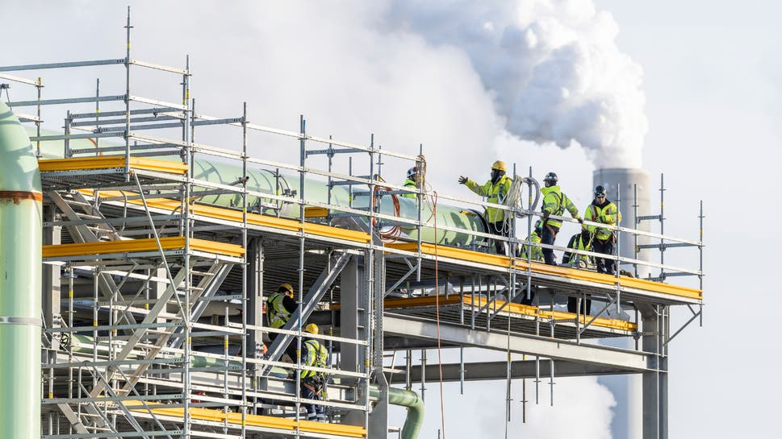
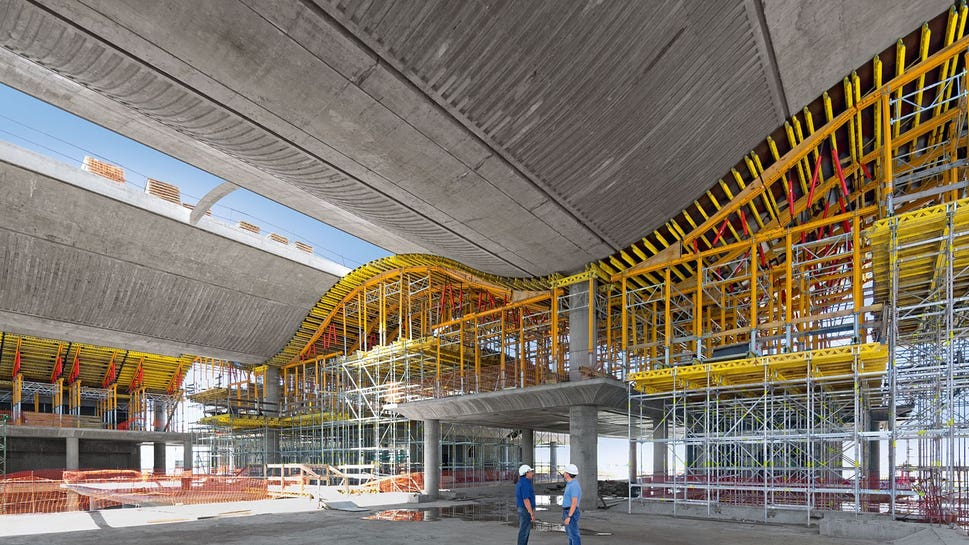

Forskaling og stillas til industribygg
Forskaling og stillas til industribygg
Hjem Effektive forskalings- og stillasløsninger for moderne byggeprosjekter Næringsbygg Effektive forskalings- og stillasløsninger for moderne byggeprosjekter Næringsbygg med komplekse krav Tilpasset varierende geometri, funksjon og fremdrift i moderne næringsprosjekter. Næringsbygg stiller høye krav til tilpasning, presisjon og effektiv gjennomføring. Prosjektene varierer i geometri, funksjon og fremdrift, og krever fleksible løsninger og god planlegging.
Vi leverer forskalings - og stillasløsninger til kontorbygg, handelsbygg og kombinasjonsprosjekter over hele Norge. Med systemer som kan tilpasses ulike konstruksjoner og prosjektfaser, bidrar vi til en effektiv og forutsigbar byggeprosess.
Næringsprosjekter er ofte mer komplekse enn boligbygg:
Dette krever løsninger som er både robuste og tilpasningsdyktige.



Kort fortalt: hva trenger du?
Beskriv saken, så svarer vi med hva det krever og hva det koster.